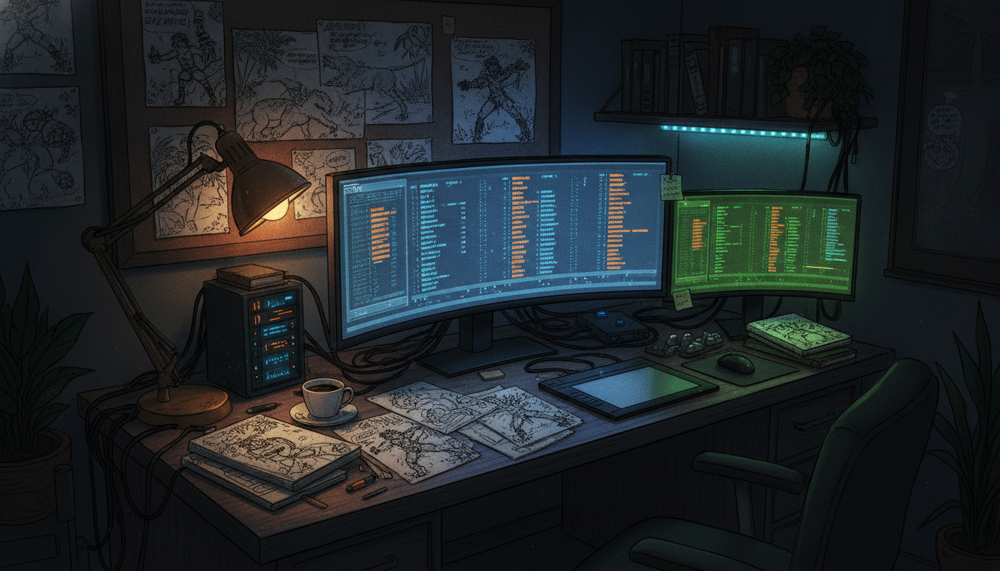

I have been building out the MonkeyZoo Comicbook Production Workflow System, which is exactly what it sounds like: a home-grown tool for managing the steps that turn a MonkeyZoo comic from raw pages into a finished, released issue. This is not a generic project management app. It is built around how a comic actually moves through production, and the last 24 hours added two pieces I have wanted in there for a while.
The big addition is a visual production QA workspace. This gives me a dedicated place to actually look at pages and catch problems before they go further down the pipeline, instead of relying on scattered notes or just eyeballing things in whatever folder they happen to be in.
Right alongside that, I added a release preparation workspace. This is the staging area for getting an issue ready to actually go out the door, separate from the working files and separate from QA. Production and release prep are different jobs, so they get different spaces.
I also went through and reconciled the navigation capability labels in the UI. Small change on paper, but it matters: as I added QA and release prep as real workspaces, the nav needed to actually say what each section does instead of leftover placeholder wording.
A comic series has a real pipeline: pages get drawn, they get checked, they get packaged, they get released. Up to now a lot of that lived in my head or in ad hoc folders. Having QA and release prep as their own workspaces inside the same system means the whole path from draft to published issue is starting to live in one place, with clear handoffs between stages instead of me trying to remember what state everything is in.
This is the part of building MonkeyZoo that I actually enjoy the most, not the drawing or the story beats, but figuring out the system underneath that lets the story beats actually ship on schedule. QA and release prep were the two gaps that bugged me the most, because without them I was doing quality checks and release packaging by memory and vibes. Having them as dedicated workspaces now means less of that lives in my head, and more of it lives in a tool I control and can keep improving. The nav cleanup is a small thing, but I would rather fix the labels the moment they stop matching reality than let a UI slowly drift into something confusing to look at.
With QA and release prep now in place, the natural next step is making sure they actually connect well to whatever comes before them in the pipeline, so a page can move cleanly from production into QA and from QA into release without me manually shuffling things around. I will keep sharing as more of the pipeline gets wired up.